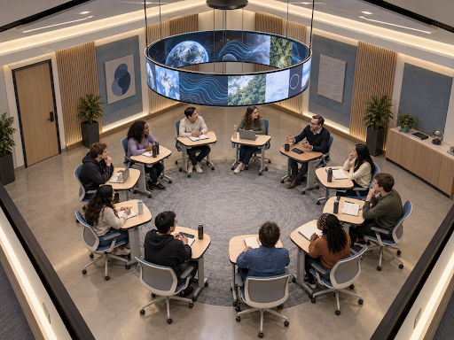
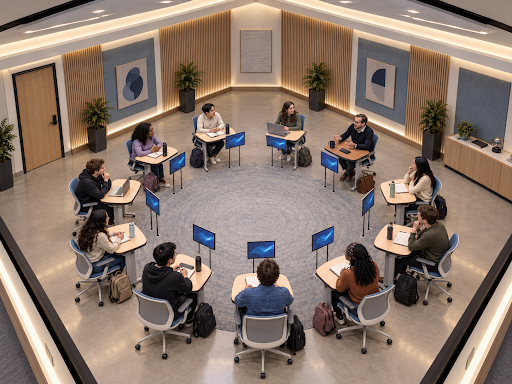
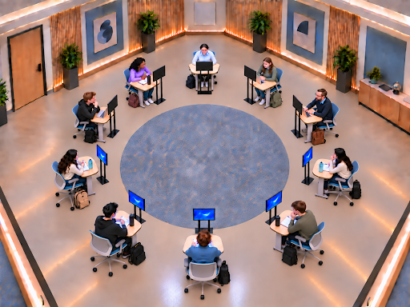

Spatial design
2030 discussion-focused classroom
I created a futuristic classroom where discussion was prioritized through a circular desk arrangement, while still allowing for students to watch presentations.
Iteration 1
01
Iteration 1:

What I liked:
- Codex created the space with beautiful plants in the background, a station for the teacher on the wall, and a wood-like design on the walls. I really enjoyed the small details that AI filled in — things that I didn’t control.
- The teacher’s desk was very discreet. I didn’t even think about making it a darker color. This was a great idea from the AI and is just another example of it performing well without specific direction.
What needs to be fixed:
Each edit will follow the format of editing AI images from “Spatial images and targeted edits” video: (1) What should the model produce; (2) What should be visible; (3) How should it be shown; (4) What constraints matter.
-
The size of the room looks like it’s too small — the students barely have any room to get out of their chairs. However, this may be a sizing issue as well, as I didn’t specify the size of the desks and chairs. Next iteration, I will be sure to specify the size of the chairs as four ft. tall and the size of the desks as three ft. I will also expand the room to 1000 sq. ft.
Here is what I sent the AI:
“This classroom should allow students to have plenty of room to get out of their chairs. There should be more space between the chairs and the wall. Due to this, change the room to be 1000 square feet and make the chairs four feet tall and desks three feet tall. Alter the other dimensions of the desks and chairs according to this change.”
-
While the AI made a good point about the presentation screen being higher up so that it doesn’t block eye contact, it had a few flaws. For one, the screen was too high up and may cause the students to put stress on their necks if watching the screen for long periods of time. Additionally, the screen looked to be broken up into 11 sections, one for each student and the teacher. I think that an individual screen for each student would be better in this scenario. To ensure that the screen doesn’t block eye contact for discussions, it will descend to the ground once the presentation is over. Each screen will be stand-alone, supported by two thin columns on either side, and will be a foot in front of each student’s desk.
Here is what I sent to the AI:
“Students should not have to crane their necks to look at a presentation on a screen. To solve this problem, the 10 students and the teacher should have their own personal screen that is 16 inches wide and 10 inches tall, each screen being stand-alone, at each person's eye level, each being supported by two thin columns on either side, and a foot in front of each student’s desk. The screen is then programmed to descend to the ground once the presentation is over.”
-
There needs to be more space between desks, since students need a place to set their backpacks. Because of this, I will tell the AI to add another two feet between each desk.
Here is what I sent to the AI:
“There should be more space between the desks for the students to place their bags. Each desk should be separated by three feet. Desks are still positioned in a circle.”
Iteration 2
02
Iteration 2:

What I liked:
- Each student and teacher has their own retractable screen at eye level.
What needs to be changed:
-
The students at the bottom of the image look as if nothing changed in the distance between their desks; however, there is a noticeable change in the distance between the two desks farthest from my point of view. I need the AI to make it look as if all the desks are three feet away from each other when I look at the image.
Here is what I said to the AI:
“It looks as if the desks at the bottom of the image are still closer than three feet away from each other; however, there is a noticeable change in the distance between the two desks on the far side of the room. Make it look as if all the desks are three feet away from each other when I look at the image.”
-
The blue screens on some students' screens are not facing them. The AI needs to make sure that the blue screens are facing each student, even if, from my point of view, I see the black backside of their screen. Additionally, some desks were missing screens, so making sure every student has a screen in front of them is important. Finally, there should be a rectangular hole the same size as the screen at the very bottom of it — a spot where it can lower into when there isn’t a presentation.
Here is what I said to the AI:
“Each screen should have a rectangular hole the same size as the screen at the very bottom of it — a spot where it can lower into when there isn’t a presentation. Additionally, each screen must be facing its viewer; many of the blue screens seem to be facing away from the student. There should be a screen in front of every desk as well — 11 screens in total.”
-
Some of the chairs of the students were still very close to the wall and didn’t allow for much wiggle room to get out of them.
Here is what I said to the AI:
“I would still like to see more space between the students' chairs and the wall. Specifically, at least five feet. The chairs closest to the walls should be at least five feet away.”
Final product
03
Final product:
